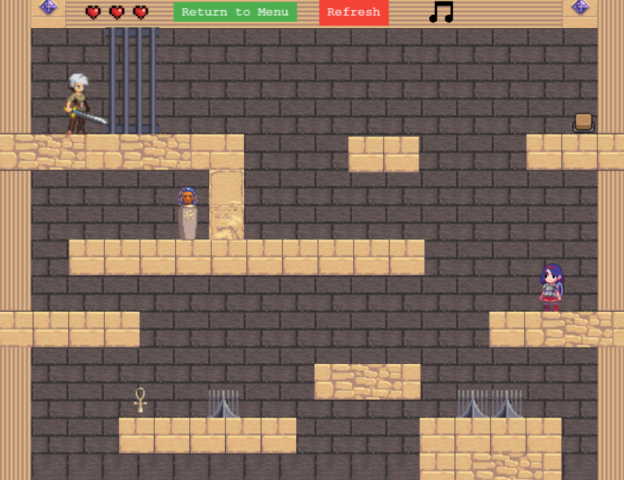
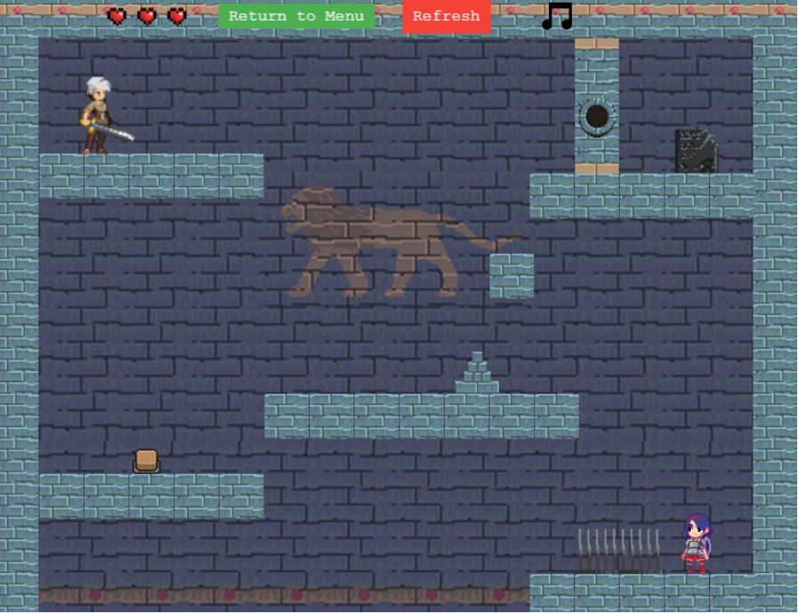

黃莉淇
遊戲 Game
網頁遊戲: 神之寶藏
使用技術與工具：Visual Studio Code、Phaser.js、HTML、CSS、JavaScript
簡介
以古代文明為主題的雙人合作橫向通關網頁遊戲，玩家需合作通過障礙，收集寶物完成關卡。
主要負責內容
發想遊戲流程與機關關卡設計
整合場景素材，設計角色差異性與關卡節奏
使用 Phaser 建置角色互動與畫面邏輯
測試功能與完成關卡過關條件設定
遊玩畫面
 